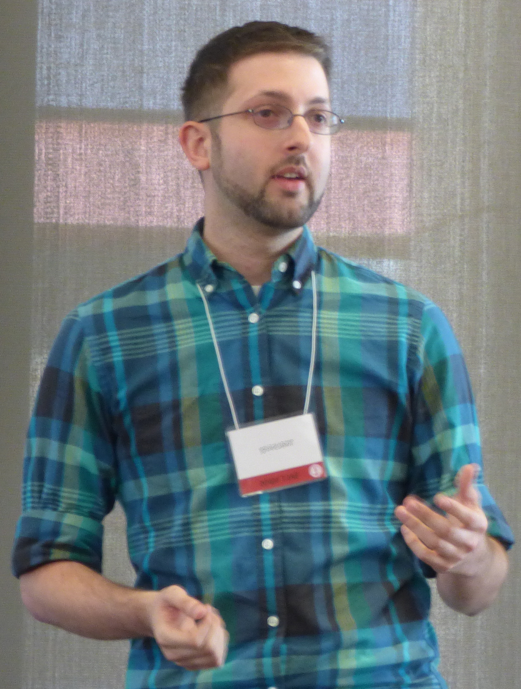

Todd Snider
Heinrich Heine Universität Düsseldorf
Institut für Sprache und Information
todd.snider
[at]
gmail
[dot]
com
About
Research
Teaching
Contact
CV
Email is probably the best way to contact me.
You can also reach me through any of these webjiggers: